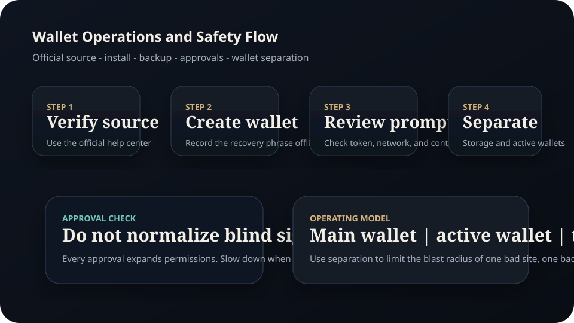
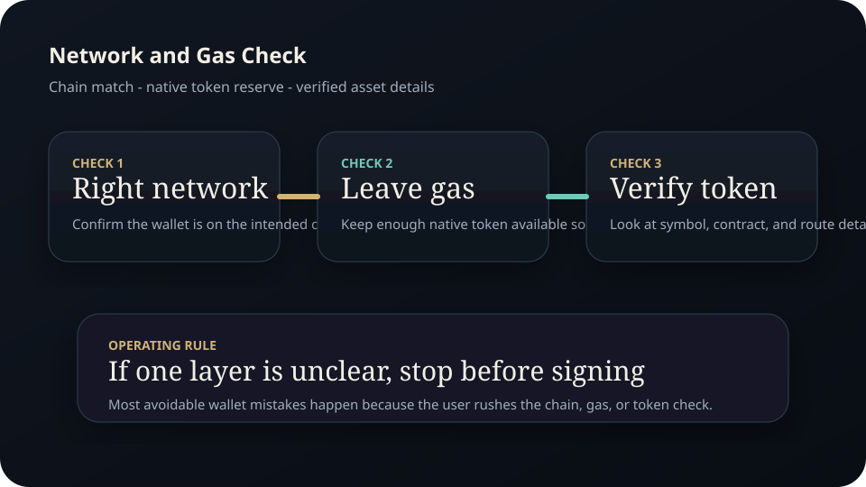
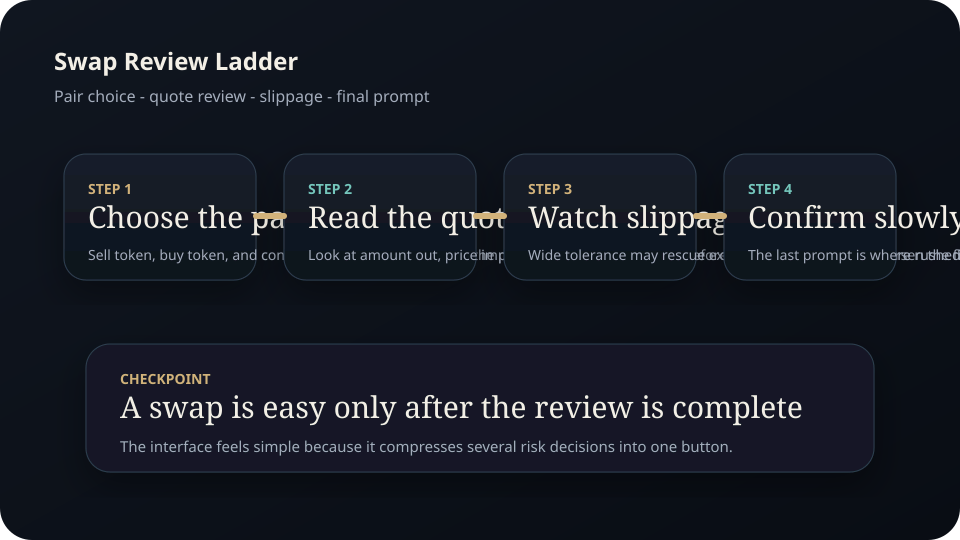

Full Edition
Wallet and DEX Starter Guide.
A full beginner edition on self-custody foundations, wallet setup logic, network awareness, swaps, approvals, and the operating habits that reduce preventable on-chain mistakes.
Disclaimer Page
Important educational and legal notice
Wallets and decentralized applications can expose users to technical, operational, and financial loss. This guide is educational only and does not replace licensed advice or official product documentation.
- Madeesh P. Nissanka is not a financial advisor, investment adviser, software support agent, tax professional, or attorney.
- This guide is not a recommendation to use any token, chain, application, or protocol.
- No promise or guarantee of profit, rewards, eligibility, or safety is made.
- Wallet mistakes can be irreversible. Sending assets to the wrong address or network can result in permanent loss.
- Secret Recovery Phrases, private keys, and approval permissions are highly sensitive. Mishandling them can compromise funds.
- Readers are responsible for checking current official documentation before connecting a wallet or signing a transaction.
Contents
Full chapter map
This edition is structured around safer wallet behavior rather than hype.
Wallet fundamentals
Accounts, keys, addresses, and what a wallet really controls.
Setup and backup
Installation logic, recovery phrase handling, and device hygiene.
Networks and gas
Mainnet, testnet, fees, and why chain selection matters.
Swap mechanics
Quotes, token selection, slippage, and the confirmation flow.
Approvals and risk
Why permissions exist and how they expand the risk surface.
Operating model
Wallet separation, verification habits, and long-term discipline.
Chapter 1
A wallet is a permission tool, not just a balance screen
Beginners often think the wallet itself stores coins like a bank account. The more accurate model is that the wallet manages access to blockchain accounts. It helps the user sign messages and transactions with the keys or recovery system behind the interface.
This distinction matters. If a user loses control of the recovery method, the funds can be lost. If a user signs a malicious approval or transaction, the problem is not the wallet brand by itself. The problem is the permission that was granted.
Chapter 2
Setup should be slow, deliberate, and documented
When creating a wallet, the user should verify the official source first, create the wallet on a clean device, write down the recovery phrase in the correct order, and store backups in controlled physical locations or other trusted offline methods. MetaMask guidance warns against exposing the recovery phrase to online services or untrusted tools.
- Verify the official site or store listing before installation.
- Create the wallet privately and confirm the recovery words in order.
- Store backups where they cannot be casually photographed, synced, or exposed.
- Separate long-term holdings from experimental activity as the account footprint grows.

Figure A. Official-source verification and wallet separation are core operating controls.
Chapter 3
Networks and gas are part of the decision, not background noise
Every on-chain action happens on a specific network. Network selection changes the token format, fee model, and the applications available. A beginner should never assume that a token on one chain is identical in practice to the similarly named token on another chain.
Gas is the network cost required to process transactions. If the wallet uses the native network token for gas, that token must be left available or the user may be unable to send the next transaction. That is why swap interfaces often warn users not to use the entire wallet balance when the network token is needed for fees.
Chapter 4
Swaps feel simple because the interface hides the complexity
Uniswap support describes a basic swap flow that sounds straightforward: connect the wallet, select the token you are selling, select the token you want, enter the amount, review the quote, and confirm the swap. The simplicity of that sequence is useful, but the user still has to evaluate what token is being selected, whether the contract is correct, whether price impact is acceptable, and whether the network fee makes sense.
Slippage settings exist because prices can move between quote and confirmation. On thin or volatile pairs, wide slippage can produce unexpectedly bad execution. Beginners should not treat the swap button as if it were a guaranteed fill on a centralized order book.

Figure B. The chain, gas reserve, and token identity should all be checked before a wallet action is signed.

Figure C. A swap should be reviewed in layers, not treated like a one-click certainty.
Chapter 5
Approvals are one of the most misunderstood sources of risk
Token approvals exist because smart contracts often need permission to move a token on the user's behalf. That is normal for many DeFi actions, but it expands the risk surface. A user can be harmed not only by sending funds directly, but also by approving a contract that later becomes compromised or that was malicious from the start.
- Read the wallet prompt slowly and reject actions that do not match the intended transaction.
- Prefer official interfaces linked from trusted documentation.
- Review and revoke stale approvals periodically, especially on experimental wallets.
- Use separation: one wallet for higher-value holdings and another for active testing.
Chapter 6
The safest long-term model is operational separation
Serious users rarely run everything through one wallet. A cleaner model is to maintain a main storage wallet, an active interaction wallet, and a disposable test wallet when needed. That separation limits the damage from one bad signature, one bad site, or one mistaken approval.
Ethereum and wallet documentation evolve. Networks change, interfaces change, and risk patterns change. The rule that stays constant is verification before interaction.
Research Notes
Source foundation and further reading
This edition is original writing built from official documentation and public-interest material. It is not copied from a third-party manual.
External facts were paraphrased and checked against official or public-interest sources available at drafting time. Before public launch, re-check any wallet, network, or app workflow against the current official documentation.
Publication Note
End of full edition
This manual is published as part of the Madeesh P. Nissanka educational library and is intended as a practical guide for readers building safer wallet and DEX habits.
Educational only. Not financial advice.
Madeesh P. Nissanka